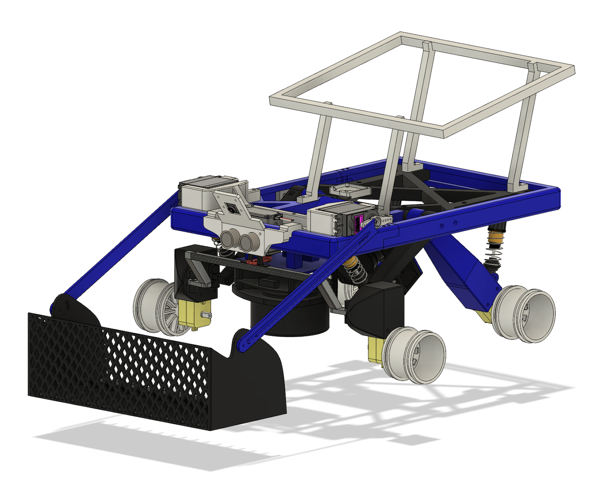

Hi, I'm David — an Electrical Engineering undergrad at the University of Calgary (Digital Engineering minor).
My ML work centres on reliability: I build systems that know what they don't know. My capstone produced an edge-deployed corrosion detector with cosine-similarity OOD rejection (95.6% accuracy, 0.873 AUROC), and a parallel research project benchmarked SimCLR, SupCon, BYOL, and ViT on the same task — finding that self-supervised representations outperform supervised ones under domain shift and enable early-exit inference that cuts ~83.5% of samples at maintained accuracy.
On the hardware side I've built autonomous rovers integrating LiDAR, IMU, encoders, and edge-deployed models on Jetson and Raspberry Pi platforms, designed RTL in SystemVerilog on Artix-7 FPGAs, and self-studied analog IC design using Cadence Virtuoso with a TSMC PDK. I also hold an R&D internship background in semiconductor device characterisation from Lision Technology in Taiwan.
Longer term I want to work on ML systems that are both scientifically interpretable and deployable at the edge — bridging intelligent algorithms with real physical constraints.
Benchmarked SimCLR, SupCon, BYOL, and ViT on a shared ResNet-18 backbone for corrosion detection, evaluating in-distribution accuracy, OOD detection (AUROC), and domain shift robustness (grayscale testing).
Implemented prototype-based OOD detection using cosine similarity; SimCLR achieved 0.839 feature AUROC and ~68% OOD rejection rate.
Demonstrated that self-supervised SimCLR outperforms supervised models under domain shift — a practically significant result for real-world deployment.
Built an early-exit inference framework achieving ~83.5% early exits at ~91.8% accuracy (SimCLR), substantially reducing average inference cost.
Applied low-rank factorization as a compression technique and evaluated its effect on accuracy-efficiency trade-offs.
TrashAuto — Autonomous Garbage Collection Rover

Group project for ENEL400. Multi-sensor autonomous robotic platform integrating AI, control, and mechanical design.
91.7%real-world accuracy
YOLOResNet-34LiDARultrasonicIMUFusion 360
Designed a two-stage CNN pipeline (YOLO detection → ResNet-34 classification) to reduce false positives; reached 91.7% real-world accuracy.
Fine-tuned ResNet-34 on a custom dataset.
Used LiDAR for object detection and ultrasonic sensing for height validation to prevent misclassification of tall non-garbage objects.
Optimised real-time inference on Raspberry Pi using event-driven triggering to reduce computation load.
Assisted with closed-loop navigation using wheel encoders and IMU feedback for precise approach and stopping control.
Assisted in designing the complete rover chassis and pickup mechanism in Fusion 360.
FPGA Design — SystemVerilog Implementation
Digital logic design and verification on a Digilent Basys 3 Artix-7 FPGA board
SystemVerilogFSMRTLtestbenchArtix-7
Designed a modular system structured around a top-level FSM coordinating game logic, LED control, and display output.
Implemented clock division and hardware debouncing for stable push-button input handling.
Developed seven-segment display multiplexing logic for real-time output.
Created a testbench verifying FSM state transitions, clock dividers, and multiplexed display logic.
Cadence Virtuoso Self-Learning — Analog IC Design with TSMC PDK
Independent study focused on tool fluency and device-level intuition.
Cadence VirtuosoSpectreTSMC PDKDC/AC/transient
Learning end-to-end Cadence Virtuoso and Spectre workflows: schematic entry, simulation setup, and result interpretation.
Simulating fundamental analog building blocks: bias networks, current mirrors, differential pairs, amplifiers, and oscillators.
Using DC, AC, and transient analyses to understand gain, bandwidth, stability, and non-ideal device behaviour.
Verifying circuit behaviour using a TSMC CMOS PDK to evaluate realistic device characteristics rather than idealised models.
Analysing threshold voltage, parasitic capacitances, and other device-level parameters to develop real-world performance intuition.
Publication
Feasibility of recent peptide therapy for ischemic stroke
K.-F. Tseng, K.-W. Tseng, et al. · Journal of Pharmacological Sciences (2026)
Contribution: data analysis and computational methodology View paper (PDF)
Certifications
PyTorch for Deep Learning Specialization — DeepLearning.AI (2026) ·
View certificate
Natural Language Processing with Sequence Models — DeepLearning.AI (2026) ·
View certificate
Transformer Models and BERT Model — Google Cloud (2026) ·
View certificate